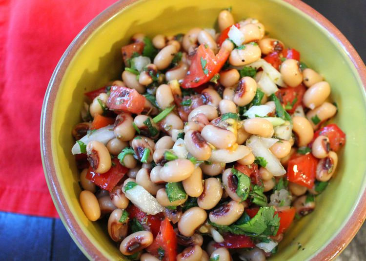

Vegan Black Eyed Pea Salad

Description
Black-eyed pea salad is great with Southern-inspired menus and tastes best at room temperature.
Ingredients
- 1 (14 ounce) can black-eyed peas, drained and rinsed
- 1 tomato - peeled, seeded, and chopped
- 2 tablespoons lemon juice
- 2 slices onion, minced
- ¼ cup chopped fresh cilantro
- 1 tablespoon olive oil
- 1 teaspoon dried oregano
- ¾ teaspoon salt, or to taste
- 1 clove garlic, minced
- ½ teaspoon ground black pepper
Steps
- Combine black-eyed peas, tomato, lemon juice, onion, cilantro,
oil, oregano, salt, garlic, and black pepper in a bowl. Cover with
plastic wrap and refrigerate until flavors are blended, at least 2 hours.